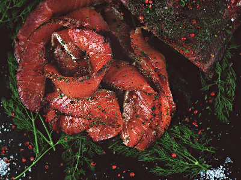

PATAGONIA KUK

OASIS DE SABORES
La cocina de Patagonia Kuk, dirigida por Julieta Cavear, reivindica un estilo de cocina en apariencia sencilla pero profunda en su ejecución, donde el diálogo con el producto local es básico, entendiendo que un buen restaurante no sería posible sin el mejor producto. Una cocina siempre fiel a lo local. Sabores simples amplificados, sabores complejos y sorpresas. Cada ingrediente con su tratamiento especial, todo está pensado, nada está librado al azar.
